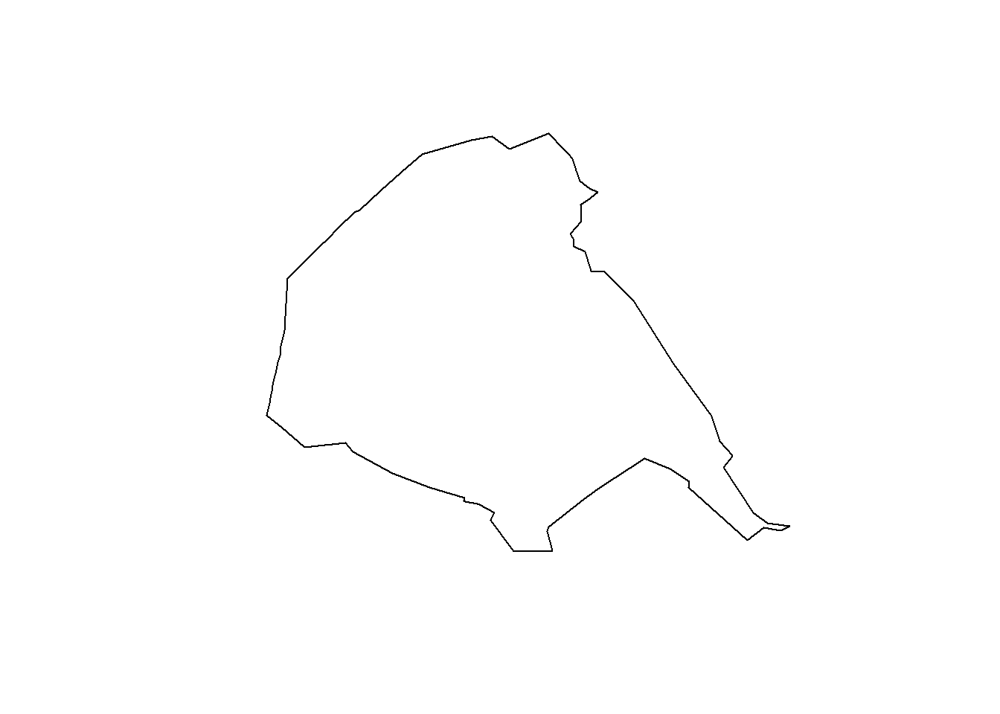
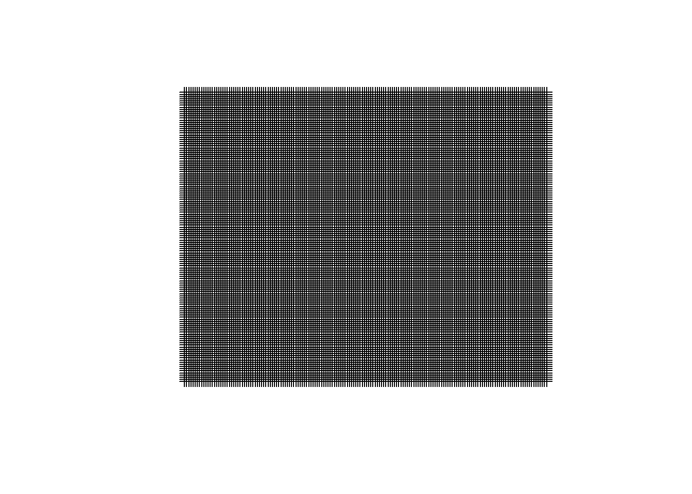
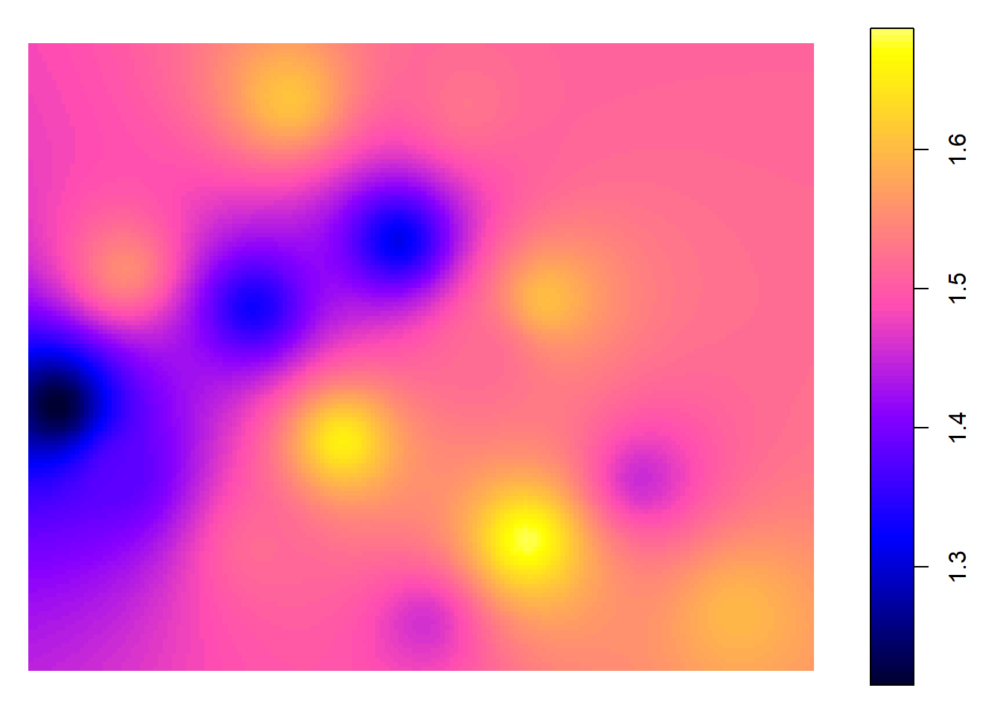
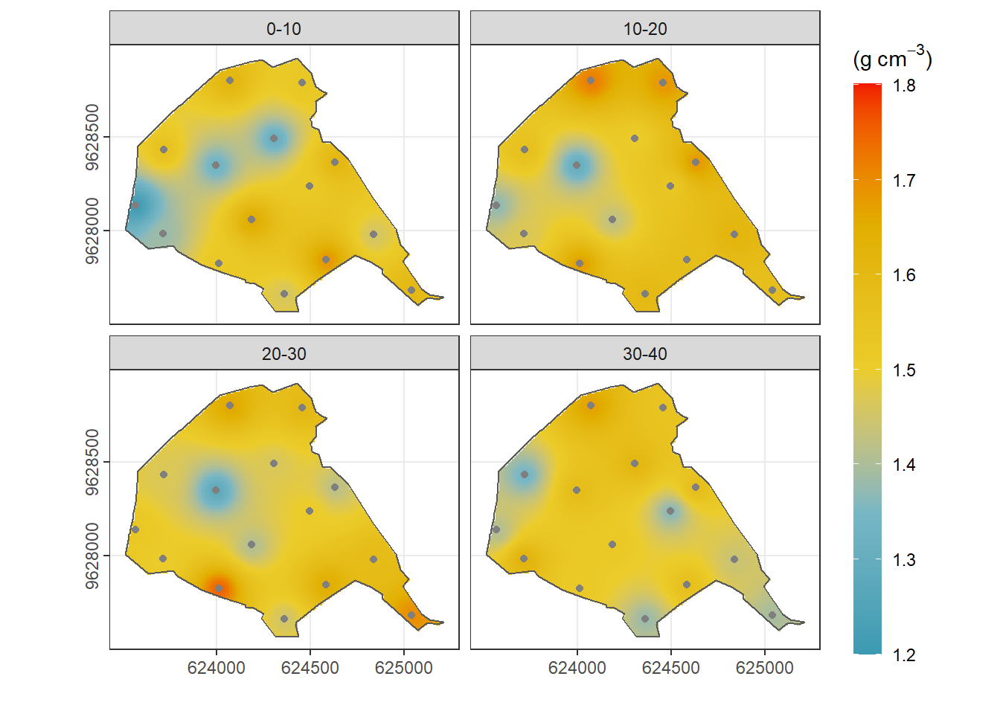

Universidad Técnica de Machala
Facultad de Ciencias Agropecuarias
Carrera de Agronomía
Geomática
Taller 6: Datos espaciales usando R
Datos Informativos
Docente: Ing. Agr. Angel Eduardo Luna Romero
setwd("C:/Users/Eirck/Desktop/diarios/Fer9819.github.io/")-install.packages(“tidyverse”)
library(pacman)
p_load(sf,raster,rgdal,rgeos,wesanderson,sp,mapview,gstat,tidyverse,readxl)read_excel("IDW_R/DATA.xlsx",sheet = 2)| x | y | Arcilla | Limo | Arena | DR | DA | Porosidad | Profund |
|---|---|---|---|---|---|---|---|---|
| 623716.2 | 9628431 | 12 | 14 | 74 | 1.960 | 1.563 | 20.257 | 10-20 |
| 624069.8 | 9628802 | 10 | 12 | 78 | 2.526 | 1.718 | 31.988 | 10-20 |
| 624457.6 | 9628788 | 12 | 32 | 56 | 2.000 | 1.684 | 15.778 | 10-20 |
| 623712.8 | 9627981 | 5 | 53 | 42 | 1.923 | 1.468 | 23.659 | 10-20 |
| 624011.4 | 9627823 | 20 | 46 | 34 | 1.962 | 1.675 | 14.614 | 10-20 |
| 624361.5 | 9627662 | 4 | 30 | 66 | 2.083 | 1.599 | 23.260 | 10-20 |
| 625041.1 | 9627683 | 0 | 24 | 76 | 2.217 | 1.565 | 29.411 | 10-20 |
| 624835.2 | 9627978 | 10 | 22 | 68 | 2.174 | 1.618 | 25.581 | 10-20 |
| 624629.2 | 9628366 | 10 | 30 | 60 | 2.381 | 1.683 | 29.316 | 10-20 |
| 624306.6 | 9628493 | 6 | 18 | 76 | 3.846 | 1.504 | 60.893 | 10-20 |
| 623994.2 | 9628349 | 0 | 66 | 34 | 1.786 | 1.302 | 27.073 | 10-20 |
| 624186.4 | 9628057 | 8 | 12 | 80 | 2.174 | 1.425 | 34.440 | 10-20 |
| 624584.6 | 9627844 | 6 | 40 | 54 | 2.040 | 1.574 | 22.826 | 10-20 |
| 624495.3 | 9628239 | 14 | 30 | 56 | 2.000 | 1.529 | 23.574 | 10-20 |
| 623568.6 | 9628136 | 28 | 38 | 34 | 1.889 | 1.371 | 27.425 | 10-20 |
ruta <- 'IDW_R/DATA.xlsx'-excel_sheets(ruta)
lts <- lapply(excel_sheets(ruta),read_excel,path= ruta)-datos finca
fnca <- shapefile("IDW_R/finca.shp")## Warning in rgdal::readOGR(dirname(x), fn, stringsAsFactors = stringsAsFactors, : Dropping null geometries:
## 1plot(fnca)
-uso de la libreria mapview, para inofrmacion en mapa
mapview()showMethods("mapview")## Function: mapview (package mapview)
## ...="ANY"
## ...="SpatialPolygonsDataFrame"
## (inherited from: ...="ANY")-Ubicar la finca en mapview
mapview(fnca)- preparar el espacio o cuariculas, donde se van a poner los valores de la interpolación
ext <- extent(fnca)– crear un objeto, para ver los valores grid
– x <- seq(from = ext[1], to = ext[2], by =10)
grd <- expand.grid(x =seq(from = ext[1], to = ext[2], by =10),
y =seq(from = ext[3], to = ext[4], by =10))
coordinates(grd) <- ~x + y
crs(grd) <- crs(fnca)
plot(grd) 
gridded(grd) <- TRUE- preparar toda la infromacion para la interpolación
pts <- lts[[1]]
coordinates(pts) <- ~ x + y
crs(pts) <- crs(fnca)
#plot(pts)Interpolación ———————————————————–
Primera capa ————————————————————
idw.p <- gstat::idw(DA ~1,pts,grd)## [inverse distance weighted interpolation]plot(idw.p)
idw.p <- raster(idw.p)
#plot(idw.p)
idw.p <- raster::mask(idw.p,fnca)
#plot(idw.p)- Función para oprtimizar ————————————————
calc_idw <- function(x){
print(x)
pts <- lts[[x]]
a <- unique(pts$Profund)
coordinates(pts) <- ~ x + y
crs(pts) <- crs(fnca)
idw.p <- gstat::idw(DA ~1,pts,grd)
idw.p <- raster(idw.p)
idw.p <- raster::mask(idw.p,fnca)
dir.create("DA")
writeRaster(idw.p,paste0("DA/idw_DA",a, ".tif"), overwrite= TRUE)
}ord <- c(1:length(lts))
rsl <- map(.x= ord, .f= calc_idw)## [1] 1
## [inverse distance weighted interpolation]## Warning in dir.create("DA"): 'DA' already exists## [1] 2
## [inverse distance weighted interpolation]## Warning in dir.create("DA"): 'DA' already exists## [1] 3
## [inverse distance weighted interpolation]## Warning in dir.create("DA"): 'DA' already exists## [1] 4
## [inverse distance weighted interpolation]## Warning in dir.create("DA"): 'DA' already exists #leer archivos
fle <- list.files("./DA/", full.names = T, pattern = ".tif$")
lyr <- stack(fle)
#plot(lyr)- extraer los valores
tbl <- rasterToPoints(lyr, xy =TRUE) %>% as_tibble() %>%
gather(var, value , -x,-y)
head(tbl,2)| x | y | var | value |
|---|---|---|---|
| 624412 | 9628915 | idw_DA0.10 | 1.520137 |
| 624422 | 9628915 | idw_DA0.10 | 1.520301 |
unique((tbl$var))## [1] "idw_DA0.10" "idw_DA10.20" "idw_DA20.30" "idw_DA30.40"- cambiar nombre de
tbl$var <- gsub("idw_DA0.10", "0-10",tbl$var)
tbl$var <- gsub("idw_DA10.20", "10-20",tbl$var)
tbl$var <- gsub("idw_DA20.30", "20-30",tbl$var)
tbl$var <- gsub("idw_DA30.40", "30-40",tbl$var)
unique((tbl$var))## [1] "0-10" "10-20" "20-30" "30-40"- ggplot ——————————————————————
- paleta de colores
pal <- wes_palette("Zissou1",5,"continuous")- valores
max(tbl$value)## [1] 1.751973min(tbl$value)## [1] 1.215154- pts
pts <- lts[[1]]
coordinates(pts) <- ~x+y
crs(pts) <- crs(fnca) - ggplot
gg <- ggplot()+
geom_raster(data = tbl, mapping = aes(x = x, y = y, fill = value))+
facet_wrap(~var)+
scale_fill_gradientn(colours = pal, na.value = "white", limits = c(1.2, 1.8),
breaks = seq(1.2, 1.8, by = 0.1))+
geom_sf(data = st_as_sf(fnca), fill = NA)+
geom_sf(data = st_as_sf(pts), color = "gray50")+
theme_bw()+
labs(x = "", y = "", fill = bquote("("*g~"cm"^-3*")"))+
scale_x_continuous(limits = c(ext[1], ext[2]), breaks = seq(624000, 625209.5, 500))+
scale_y_continuous(limits = c(ext[3], ext[4]), breaks = seq(9628000, 9633280, 500))+
coord_sf(xlim = extent(fnca)[1:2], ylim = extent(fnca)[3:4], datum = sf::st_crs(32717))+
theme(panel.background = element_rect(fill = "white", color = "gray50"),
legend.title.align = 0.5,
#strip.text = element_blank(),
#strip.background = element_blank(),
#legend.key.width = unit(5, "line"),
#panel.grid.minor = element_blank(),
axis.text.y = element_text(angle = 90, hjust = 0.5),
legend.position = "right",
legend.key.width = unit(1, "line"),
legend.key.height = unit(4, "line"))+
guides(shape = guide_legend(override.aes = list(size = 10)))
plot(gg)
dir.create("mp/")## Warning in dir.create("mp/"): 'mp' already existsggsave(plot = gg, filename = "mp/mapa.png", width = 25, height = 15, units = "cm", dpi = 300)